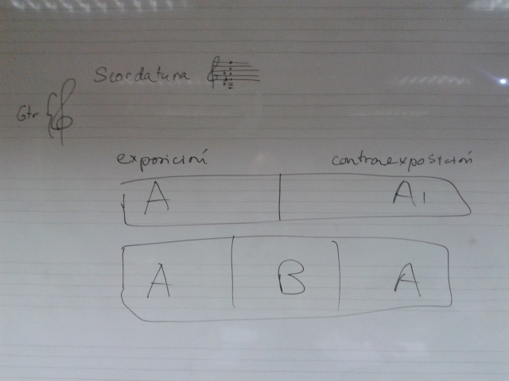
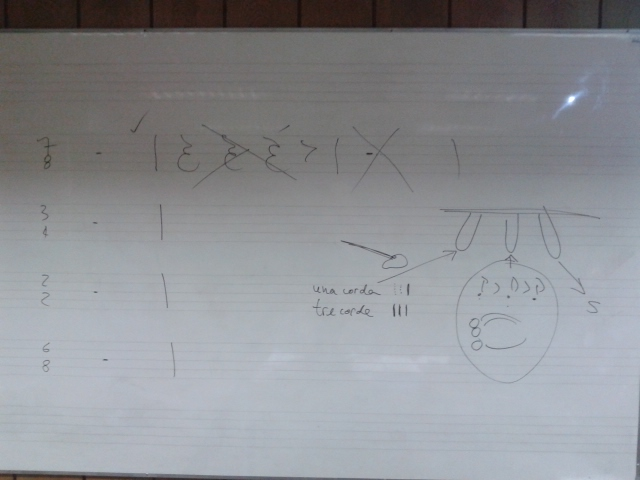
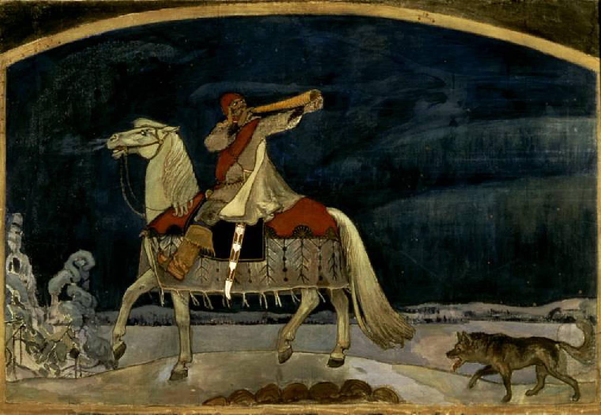
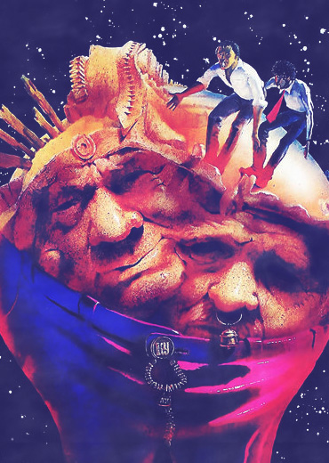

Composición I
Clase 011


Serenata para Cuerdas
Piotr Tchaikovsky
[partitura]
Kullervo

Kin-dza-dza!

Adición
(P. I. Tchaikovsky)
[El rezo de la mañana]
[La muñeca enferma]
“Untitled”
Rudolf Nuréyev
[wiki]
Disco Secreto:
La maquina de hacer pájaros, Películas
Postdata Data
Experimento de 2 links
011